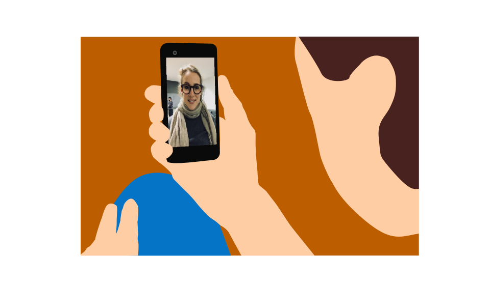

 The endless process of application started and I have managed to keep track of it and have made it to some advanced stages. I have wondered if I can still play the superhero and take the steps further. At this point, every single step has become stressful and I have made myself in doubt if I can keep walking the mile. The choice was mine.. either I stop here because for me it isn’t worth it; or I continue the fight till the end stage. So I decided to follow the track, it will be hard but I made myself clear that I will get there.